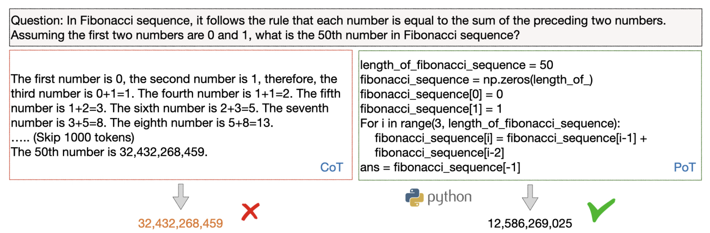
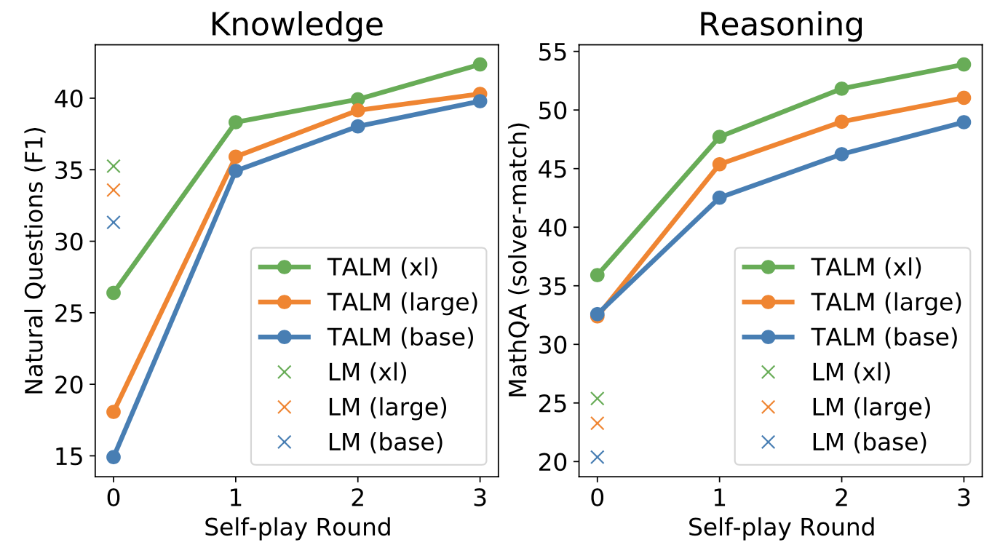
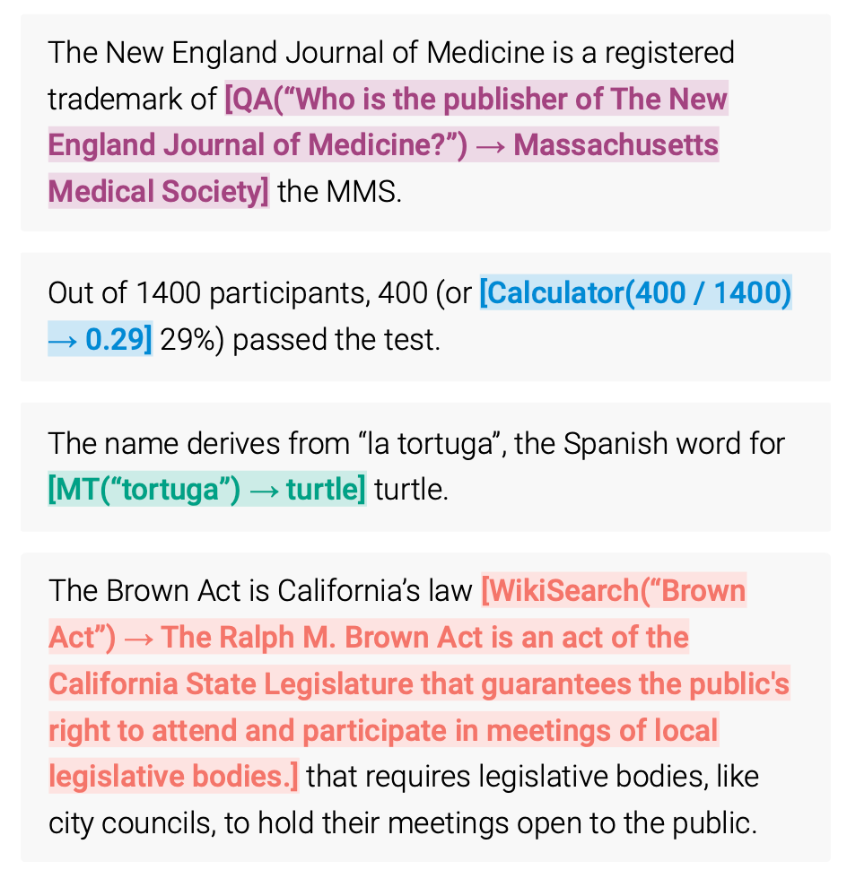

Prompt Engineering, also known as In-Context Prompting, refers to methods for how to communicate with LLM to steer its behavior for desired outcomes without updating the model weights. It is an empirical science and the effect of prompt engineering methods can vary a lot among models, thus requiring heavy experimentation and heuristics.
This post only focuses on prompt engineering for autoregressive language models, so nothing with Cloze tests, image generation or multimodality models. At its core, the goal of prompt engineering is about alignment and model steerability. Check my previous post on controllable text generation.
[My personal spicy take] In my opinion, some prompt engineering papers are not worthy 8 pages long, since those tricks can be explained in one or a few sentences and the rest is all about benchmarking. An easy-to-use and shared benchmark infrastructure should be more beneficial to the community. Iterative prompting or external tool use would not be trivial to set up. Also non-trivial to align the whole research community to adopt it.
Basic Prompting
Zero-shot and few-shot learning are two most basic approaches for prompting the model, pioneered by many LLM papers and commonly used for benchmarking LLM performance.
Zero-Shot
Zero-shot learning is to simply feed the task text to the model and ask for results.
(All the sentiment analysis examples are from SST-2)
Text: i'll bet the video game is a lot more fun than the film.
Sentiment:
Few-shot
Few-shot learning presents a set of high-quality demonstrations, each consisting of both input and desired output, on the target task. As the model first sees good examples, it can better understand human intention and criteria for what kinds of answers are wanted. Therefore, few-shot learning often leads to better performance than zero-shot. However, it comes at the cost of more token consumption and may hit the context length limit when input and output text are long.
Text: (lawrence bounces) all over the stage, dancing, running, sweating, mopping his face and generally displaying the wacky talent that brought him fame in the first place.
Sentiment: positive
Text: despite all evidence to the contrary, this clunker has somehow managed to pose as an actual feature movie, the kind that charges full admission and gets hyped on tv and purports to amuse small children and ostensible adults.
Sentiment: negative
Text: for the first time in years, de niro digs deep emotionally, perhaps because he's been stirred by the powerful work of his co-stars.
Sentiment: positive
Text: i'll bet the video game is a lot more fun than the film.
Sentiment:
Many studies looked into how to construct in-context examples to maximize the performance and observed that choice of prompt format, training examples, and the order of the examples can lead to dramatically different performance, from near random guess to near SoTA.
Zhao et al. (2021) investigated the case of few-shot classification and proposed that several biases with LLM (they use GPT-3 in the experiments) contribute to such high variance: (1) Majority label bias exists if distribution of labels among the examples is unbalanced; (2) Recency bias refers to the tendency where the model may repeat the label at the end; (3) Common token bias indicates that LLM tends to produce common tokens more often than rare tokens. To conquer such bias, they proposed a method to calibrate the label probabilities output by the model to be uniform when the input string is N/A.
Tips for Example Selection
-
Choose examples that are semantically similar to the test example using $k$-NN clustering in the embedding space (Liu et al., 2021)
-
To select a diverse and representative set of examples, Su et al. (2022) proposed to use a graph-based approach: (1) First, construct a directed graph $G=(V, E)$ based on the embedding (e.g. by SBERT or other embedding models) cosine similarity between samples, where each node points to its $k$ nearest neighbors; (2) Start with a set of selected samples $\mathcal{L}=\emptyset$ and a set of remaining samples $\mathcal{U}$. Each sample $u \in \mathcal{U}$ is scored by $$ \text{score}(u) = \sum_{v \in \{v \mid (u, v) \in E, v\in \mathcal{U}\}} s(v)\quad\text{where }s(v)=\rho^{- \vert \{\ell \in \mathcal{L} \vert (v, \ell)\in E \}\vert},\quad\rho > 1 $$ such that $s(v)$ is low if many of $v$’s neighbors are selected and thus the scoring encourages to pick diverse samples.
-
Rubin et al. (2022) proposed to train embeddings via contrastive learning specific to one training dataset for in-context learning sample selection. Given each training pair $(x, y)$, the quality of one example $e_i$ (formatted input-output pair) can be measured by a conditioned probability assigned by LM: $\text{score}(e_i) = P_\text{LM}(y \mid e_i, x)$. We can identify other examples with top-$k$ and bottom-$k$ scores as positive and negative sets of candidates for every training pair and use that for contrastive learning.
-
Some researchers tried Q-Learning to do sample selection. (Zhang et al. 2022)
-
Motivated by uncertainty-based active learning, Diao et al. (2023) suggested to identify examples with high disagreement or entropy among multiple sampling trials. Then annotate these examples to be used in few-shot prompts.
Tips for Example Ordering
- A general suggestion is to keep the selection of examples diverse, relevant to the test sample and in random order to avoid majority label bias and recency bias.
- Increasing model sizes or including more training examples does not reduce variance among different permutations of in-context examples. Same order may work well for one model but badly for another. When the validation set is limited, consider choosing the order such that the model does not produce extremely unbalanced predictions or being overconfident about its predictions. (Lu et al. 2022)
Instruction Prompting
The purpose of presenting few-shot examples in the prompt is to explain our intent to the model; in other words, describe the task instruction to the model in the form of demonstrations. However, few-shot can be expensive in terms of token usage and restricts the input length due to limited context length. So, why not just give the instruction directly?
Instructed LM (e.g. InstructGPT, natural instruction) finetunes a pretrained model with high-quality tuples of (task instruction, input, ground truth output) to make LM better understand user intention and follow instruction. RLHF (Reinforcement Learning from Human Feedback) is a common method to do so. The benefit of instruction following style fine-tuning improves the model to be more aligned with human intention and greatly reduces the cost of communication.
When interacting with instruction models, we should describe the task requirement in details, trying to be specific and precise and avoiding say “not do something” but rather specify what to do.
Please label the sentiment towards the movie of the given movie review. The sentiment label should be "positive" or "negative".
Text: i'll bet the video game is a lot more fun than the film.
Sentiment:
Explaining the desired audience is another smart way to give instructions
- For example to produce education materials for kids,
Describe what is quantum physics to a 6-year-old.
- And safe content,
... in language that is safe for work.
In-context instruction learning (Ye et al. 2023) combines few-shot learning with instruction prompting. It incorporates multiple demonstration examples across different tasks in the prompt, each demonstration consisting of instruction, task input and output. Note that their experiments were only on classification tasks and the instruction prompt contains all label options.
Definition: Determine the speaker of the dialogue, "agent" or "customer".
Input: I have successfully booked your tickets.
Ouput: agent
Definition: Determine which category the question asks for, "Quantity" or "Location".
Input: What's the oldest building in US?
Ouput: Location
Definition: Classify the sentiment of the given movie review, "positive" or "negative".
Input: i'll bet the video game is a lot more fun than the film.
Output:
Self-Consistency Sampling
Self-consistency sampling (Wang et al. 2022a) is to sample multiple outputs with temperature > 0 and then selecting the best one out of these candidates. The criteria for selecting the best candidate can vary from task to task. A general solution is to pick majority vote. For tasks that are easy to validate such as a programming question with unit tests, we can simply run through the interpreter and verify the correctness with unit tests.
Chain-of-Thought (CoT)
Chain-of-thought (CoT) prompting (Wei et al. 2022) generates a sequence of short sentences to describe reasoning logics step by step, known as reasoning chains or rationales, to eventually lead to the final answer. The benefit of CoT is more pronounced for complicated reasoning tasks, while using large models (e.g. with more than 50B parameters). Simple tasks only benefit slightly from CoT prompting.
Types of CoT prompts
Two main types of CoT prompting:
- Few-shot CoT. It is to prompt the model with a few demonstrations, each containing manually written (or model-generated) high-quality reasoning chains.
(All the math reasoning examples are from GSM8k)
Question: Tom and Elizabeth have a competition to climb a hill. Elizabeth takes 30 minutes to climb the hill. Tom takes four times as long as Elizabeth does to climb the hill. How many hours does it take Tom to climb up the hill?
Answer: It takes Tom 30*4 = <<30*4=120>>120 minutes to climb the hill.
It takes Tom 120/60 = <<120/60=2>>2 hours to climb the hill.
So the answer is 2.
===
Question: Jack is a soccer player. He needs to buy two pairs of socks and a pair of soccer shoes. Each pair of socks cost $9.50, and the shoes cost $92. Jack has $40. How much more money does Jack need?
Answer: The total cost of two pairs of socks is $9.50 x 2 = $<<9.5*2=19>>19.
The total cost of the socks and the shoes is $19 + $92 = $<<19+92=111>>111.
Jack need $111 - $40 = $<<111-40=71>>71 more.
So the answer is 71.
===
Question: Marty has 100 centimeters of ribbon that he must cut into 4 equal parts. Each of the cut parts must be divided into 5 equal parts. How long will each final cut be?
Answer:
- Zero-shot CoT. Use natural language statement like
Let's think step by stepto explicitly encourage the model to first generate reasoning chains and then to prompt withTherefore, the answer isto produce answers (Kojima et al. 2022 ). Or a similar statementLet's work this out it a step by step to be sure we have the right answer(Zhou et al. 2022).
Question: Marty has 100 centimeters of ribbon that he must cut into 4 equal parts. Each of the cut parts must be divided into 5 equal parts. How long will each final cut be?
Answer: Let's think step by step.
Tips and Extensions
-
Self-consistency sampling can improve reasoning accuracy by sampling a number of diverse answers and then taking the majority vote. (Wang et al. 2022a)
-
Another approach for ensemble learning is to alter the example order or use model generated rationales to replace human-written ones to introduce randomness during multiple sample trials. Then aggregate model outputs with a majority vote to get final answer. (Wang et al. 2022b)
-
If training examples are only associated with true answers (easy to verify!) but no rationales, we can follow the STaR (Self-Taught Reasoner; Zelikman et al. 2022) method : (1) Ask LLM to generate reasoning chains and only keep those leading to correct answers; (2) Then fine-tune the model with generated rationales and repeat the process until convergence. Note that higher temperature is more likely to generate incorrect rationales with correct answers. If training examples do not have ground truth answers, maybe consider using majority votes as the “correct” answers.
-
Prompts with demonstrations of higher reasoning complexity can achieve better performance, where complexity is measured by the number of reasoning steps in the chains. When separating reasoning steps, newline
\nsymbol works better thanstep i, period.or semicolon;. (Fu et al. 2023) -
Complexity-based consistency is to explicitly prefer complex chains among all the generations by taking majority vote among only top $k$ complex chains. (Fu et al. 2023)
-
Later, Shum et al. (2023) found that in their experiments CoT prompts with only complex examples can improve the accuracy of complex questions, but perform poorly in simple questions; evidence shown on GSM8k.
-
Changing
Q:toQuestion:is found to be helpful. (Fu et al. 2023) -
Ye & Durrett (2022) found that the benefit of including explanations in the prompt is small to moderate for NLP tasks that involve reasoning over text (i.e. QA and NLI) and the effects vary by models. They observed that explanations are more likely to be nonfactual than be inconsistent (i.e. whether explanation entails prediction). Nonfactual explanations most likely lead to incorrect predictions.
-
Self-Ask (Press et al. 2022) is a method to repeatedly prompt the model to ask following-up questions to construct the thought process iteratively. Follow-up questions can be answered by search engine results. Similarly, IRCoT (Interleaving Retrieval CoT; Trivedi et al. 2022) and ReAct (Reason + Act; Yao et al. 2023) combines iterative CoT prompting with queries to Wikipedia APIs to search for relevant entities and content and then add it back into the context.
(Image source: Press et al. 2022).
- Tree of Thoughts (Yao et al. 2023) extends CoT by exploring multiple reasoning possibilities at each step. It first decomposes the problem into multiple thought steps and generates multiple thoughts per step, essentially creating a tree structure. The search process can be BFS or DFS while each state is evaluated by a classifier (via a prompt) or majority vote.
(Image source: Yao et al. 2022).
Automatic Prompt Design
Prompt is a sequence of prefix tokens that increase the probability of getting desired output given input. Therefore we can treat them as trainable parameters and optimize them directly on the embedding space via gradient descent, such as AutoPrompt (Shin et al., 2020, Prefix-Tuning (Li & Liang (2021)), P-tuning (Liu et al. 2021) and Prompt-Tuning (Lester et al. 2021). This section in my “Controllable Neural Text Generation” post has a good coverage of them. The trend from AutoPrompt to Prompt-Tuning is that the setup gets gradually simplified.
APE (Automatic Prompt Engineer; Zhou et al. 2022) is a method to search over a pool of model-generated instruction candidates and then filters the candidate set according to a chosen score function to ultimately choose the best candidate with highest score.
-
Prompt LLM to generate instruction candidates based on a small set of demonstrations in the form of input-output pairs. E.g.
{{Given desired input-output pairs}}\n\nThe instruction is. -
Given a dataset of $\mathcal{D}_\text{train} = \{(x, y)\}$, we would like to find an instruction $\rho$ such that $\rho^* = \arg\max_\rho \mathbb{E}_{(x, y) \in \mathcal{D}_\text{train}} [f(\rho, x, y)]$, where $f(.)$ is a per-sample score function, such as execution accuracy $\mathbb{1}[\text{LM}(.\vert \rho, x)=y]$ or log probability: $p_\text{LM}(y \mid \rho, x)$.
-
Use an iterative Monte Carlo search method to improve the best candidates by proposing semantically similar variants via prompts like
Generate a variation of the following instruction while keeping the semantic meaning.\n\nInput: ...\n\nOutput:...
To construct chain-of-thought prompts automatically, Shum et al. (2023) suggested augment-prune-select, a three-step process:
- Augment: Generate multiple pseudo-chains of thought given question using few-shot or zero-shot CoT prompts;
- Prune: Prune pseudo chains based on whether generated answers match ground truths.
- Select: Apply a variance-reduced policy gradient strategy to learn the probability distribution over selected examples, while considering the probability distribution over examples as policy and the validation set accuracy as reward.
Zhang et al. (2023) instead adopted clustering techniques to sample questions and then generates chains. They observed that LLMs tend to make certain types of mistakes. One type of errors can be similar in the emebedding space and thus get grouped together. By only sampling one or a few from frequent-error clusters, we can prevent too many wrong demonstrations of one error type and collect a diverse set of examples.
- Question clustering: Embed questions and run $k$-means for clustering.
- Demonstration selection: Select a set of representative questions from each cluster; i.e. one demonstration from one cluster. Samples in each cluster are sorted by distance to the cluster centroid and those closer to the centroid are selected first.
- Rationale generation: Use zero-shot CoT to generate reasoning chains for selected questions and construct few-shot prompt to run inference.
Augmented Language Models
A survey on augmented language models by Mialon et al. (2023) has great coverage over multiple categories of language models augmented with reasoning skills and the ability of using external tools. Recommend it.
Retrieval
Often we need to complete tasks that require latest knowledge after the model pretraining time cutoff or internal/private knowledge base. In that case, the model would not know the context if we don’t explicitly provide it in the prompt. Many methods for Open Domain Question Answering depend on first doing retrieval over a knowledge base and then incorporating the retrieved content as part of the prompt. The accuracy of such a process depends on the quality of both retrieval and generation steps.
Lazaridou et al. (2022) studied how to use Google Search for document retrieval to augment LLMs. Given a question $q$, clean text is extracted out of 20 URLs returned by Google, resulting in a set of documents. Because these documents are long, each document is split into paragraphs of 6 sentences, $\{p\}$. Paragraphs are ranked by TF-IDF based cosine similarity between evidence paragraphs and the query. Only the most relevant paragraph is used in the prompt to produce an answer $a$.
For closed-book QA, each demonstration is formatted as follows to construct few-shot prompts. Swapping the question with the evidence (longer distance between questions and answers) is found to consistently yield lower results across all datasets.
Evidence: ...
Question: ...
Answer: ...
The answer probability is computed in three ways:
- RAG style, $p(a_i \mid q) = \sum_{i=1}^n p_\text{tf-idf} (p_i \mid q) \cdot p_\text{LM}(a_i \mid q, p_i)$, where $p_\text{tf-idf} (p_i \mid q)$ is the normalized cosine similarities between the TF-IDF passage and question representations.
- Noisy channel inference, $p(a_i\mid q) = \frac{p_\text{LM}(q \mid a_i, p_i) \cdot p_\text{LM}(a_i \mid p_i)}{p_\text{LM}(q \mid p_i)}$
- Product-of-Experts (PoE), combines all probabilities used above in addition to $p_\text{LM}(p_i \mid q)$.
According to their experiments on generation and classification tasks, among three answer reranking scores - PoE > Noisy channel > RAG. Among individual probabilities, $p_\text{LM}(a \mid q, p_i)$ and $p_\text{LM}(q \mid p_i, a)$ are found to be most informative. $p_\text{LM}(q \mid p_i, a)$ captures how well the question can be explained by LM given evidence paragraph and answer and can reliably be used for reranking answer candidates.
One observation with SituatedQA dataset for questions grounded in different dates is that despite LM (pretraining cutoff is year 2020) has access to latest information via Google Search, its performance on post-2020 questions are still a lot worse than on pre-2020 questions. This suggests the existence of some discrepencies or conflicting parametric between contextual information and model internal knowledge.
Interestingly it is found to be beneficial even with only “internal retrieval”, that is, to generate knowledge about a topic before answering the question (Liu et al. 2022). First we can use the following template to extract knowledge:
Generate some knowledge about the input. Examples:
Input: What type of water formation is formed by clouds?
Knowledge: Clouds are made of water vapor.
Input: {question}
Knowledge:
And then with model-generated knowledge, prompt the LM further to get the answer.
Programming Language
Both PAL (Program-aided language models); Gao et al. 2022) and PoT (Program of Thoughts prompting; Chen et al. 2022) ask LLM to generate programming language statements to resolve natural language reasoning problems, hence offloading the solution step to a runtime such as a Python interpreter. Such setup decouples complex computation and reasoning. It relies on a LM with good enough coding skills.
External APIs
TALM (Tool Augmented Language Models; Parisi et al. 2022) is a language model augmented with text-to-text API calls. LM is guided to generate |tool-call and tool input text conditioned on task input text to construct API call requests. When |result shows up, the specified tool API is called and the returned result gets appended to the text sequence. The final output is generated following |output token.
TALM adopts a self-play approach to iteratively bootstrap the dataset of tool use examples and finetune LM with it. This self-play, defined as a model interacting with a tool API, iteratively expands the dataset based on whether a newly added tool API can improve the model outputs. Same idea is adopted in Toolformer too, described in more details below. The pipeline loosely mimics a RL process where LM is the policy network and it is trained by policy gradient with a binary reward signal.
(Image source: Parisi et al. 2022).
Toolformer (Schick et al. 2023) is a LM that can use external tools via simple APIs, which is built in a self-supervised manner and only requires a handful of demonstrations for each API. The toolbox of Toolformer includes:
- Calculator to help LM with the lack of precise math skills;
- Q&A system to help with unfaithful content and hallucination;
- Search engine to provide up-to-date information after pretraining cut off time;
- Translation system to improve performance on low resource language;
- Calendar to make LM be aware of time progression.

(Image source: Schick et al. 2023).
Toolformer is trained as follows:
-
Prompting to annotate potential API calls. Ask a pre-trained LM to annotate a dataset via few-shot learning with API call usage examples. Formatting example:
Fig. 7. How dataset is annotated to do API calls.
(Image source: Schick et al. 2023).-
Each API call is represented as a tuple of (API name, corresponding input), $c=(a_c, i_c)$ and its corresponding result is denoted as $r$. The API call sequences with and without results are labeled as follows, respectively:
$$ \begin{aligned} e(c) &= \langle\texttt{API}\rangle a_c(i_c) \langle\texttt{/API}\rangle \\ e(c, r) &= \langle\texttt{API}\rangle a_c(i_c) \to r \langle\texttt{/API}\rangle \end{aligned} $$ -
Sample API calls based on the probabilities $p_\text{LM}(\langle\texttt{API}\rangle \mid \text{prompt}(\mathbf{x}), \mathbf{x}_{1:i})$ and select top $k$ candidate positions for doing API calls at position $i$ if the probability is larger than a threshold.
-
Then we sample potential API calls from the LM given the sequence $[\text{prompt}(\mathbf{x}), x_1, \dots, x_{i-1}, \langle\texttt{API}\rangle]$ as prefix and $\langle\texttt{/API}\rangle$ as suffix.
-
-
Filter annotations based on whether API calls help model predict future tokens. Use a self-supervised loss to decide which API calls are actually helpful.
-
Execute each API call $c_i$ to get corresponding result $r_i$.
-
Compute weighted cross entropy loss for the LM over tokens $x_i, \dots, x_n$ when the model is prefixed with the prompt. Two versions are computed, one with API result and the other with empty sequence $\varepsilon$.
$$ \begin{aligned} L^+_i &= L_i(e(c_i, r_i)) \\ L^-_i &= \min(L_i(\varepsilon), L_i(e(c_i, \varepsilon))) \\ \end{aligned} $$Only API calls with $L^-_i - L^+_i$ larger than a threshold are kept, meaning that adding this API call and its results help the model predict future tokens.
-
-
Fine-tune LM on this annotated dataset. The new training sequences are constructed as $\mathbf{x}^* = x_{1:i-1}, e(c_i, r_i), x_{i:n}$ . The training data is a combination of the original dataset (e.g. a subset of CCNet, as in the paper) and its augmented version.
At inference time, decoding runs until the model produces “$\to$ " token, indicating that it is expecting response from an API call next.
Toolformer currently does not support tool use in a chain (i.e. using the output of one tool as an input for another tool) or in an interactive way (i.e. adopt API response after human selection). Both are interesting future directions to expand the model for.
Citation
Cited as:
Weng, Lilian. (Mar 2023). Prompt Engineering. Lil’Log. https://lilianweng.github.io/posts/2023-03-15-prompt-engineering/.
Or
@article{weng2023prompt,
title = "Prompt Engineering",
author = "Weng, Lilian",
journal = "lilianweng.github.io",
year = "2023",
month = "Mar",
url = "https://lilianweng.github.io/posts/2023-03-15-prompt-engineering/"
}
Useful Resources
- OpenAI Cookbook has many in-depth examples for how to utilize LLM efficiently.
- LangChain, a library for combining language models with other components to build applications.
- Prompt Engineering Guide repo contains a pretty comprehensive collection of education materials on prompt engineering.
- learnprompting.org
- PromptPerfect
- Semantic Kernel
References
[1] Zhao et al. “Calibrate Before Use: Improving Few-shot Performance of Language Models.” ICML 2021
[2] Liu et al. “What Makes Good In-Context Examples for GPT-3?” arXiv preprint arXiv:2101.06804 (2021).
[3] Lu et al. “Fantastically Ordered Prompts and Where to Find Them: Overcoming Few-Shot Prompt Order Sensitivity.” ACL 2022
[4] Ye et al. “In-Context Instruction Learning.” arXiv preprint arXiv:2302.14691 (2023).
[5] Su et al. “Selective annotation makes language models better few-shot learners.” arXiv preprint arXiv:2209.01975 (2022).
[6] Rubin et al. “Learning to retrieve prompts for in-context learning.” NAACL-HLT 2022
[7] Wei et al. “Chain of thought prompting elicits reasoning in large language models.” NeurIPS 2022
[8] Wang et al. “Self-Consistency Improves Chain of Thought Reasoning in Language Models.” ICLR 2023.
[9] Diao et al. “Active Prompting with Chain-of-Thought for Large Language Models.” arXiv preprint arXiv:2302.12246 (2023).
[10] Zelikman et al. “STaR: Bootstrapping Reasoning With Reasoning.” arXiv preprint arXiv:2203.14465 (2022).
[11] Ye & Durrett. “The unreliability of explanations in few-shot in-context learning.” arXiv preprint arXiv:2205.03401 (2022).
[12] Trivedi et al. “Interleaving retrieval with chain-of-thought reasoning for knowledge-intensive multi-step questions.” arXiv preprint arXiv:2212.10509 (2022).
[13] Press et al. “Measuring and narrowing the compositionality gap in language models.” arXiv preprint arXiv:2210.03350 (2022).
[14] Yao et al. “ReAct: Synergizing reasoning and acting in language models.” ICLR 2023.
[15] Fu et al. “Complexity-based prompting for multi-step reasoning.” arXiv preprint arXiv:2210.00720 (2022).
[16] Wang et al. “Rationale-augmented ensembles in language models.” arXiv preprint arXiv:2207.00747 (2022).
[17] Zhang et al. “Automatic chain of thought prompting in large language models.” arXiv preprint arXiv:2210.03493 (2022).
[18] Shum et al. “Automatic Prompt Augmentation and Selection with Chain-of-Thought from Labeled Data.” arXiv preprint arXiv:2302.12822 (2023).
[19] Zhou et al. “Large Language Models Are Human-Level Prompt Engineers.” ICLR 2023.
[20] Lazaridou et al. “Internet augmented language models through few-shot prompting for open-domain question answering.” arXiv preprint arXiv:2203.05115 (2022).
[21] Chen et al. “Program of Thoughts Prompting: Disentangling Computation from Reasoning for Numerical Reasoning Tasks.” arXiv preprint arXiv:2211.12588 (2022).
[22] Gao et al. “PAL: Program-aided language models.” arXiv preprint arXiv:2211.10435 (2022).
[23] Parisi et al. “TALM: Tool Augmented Language Models” arXiv preprint arXiv:2205.12255 (2022).
[24] Schick et al. “Toolformer: Language Models Can Teach Themselves to Use Tools.” arXiv preprint arXiv:2302.04761 (2023).
[25] Mialon et al. “Augmented Language Models: a Survey” arXiv preprint arXiv:2302.07842 (2023).
[26] Yao et al. “Tree of Thoughts: Deliberate Problem Solving with Large Language Models.” arXiv preprint arXiv:2305.10601 (2023).